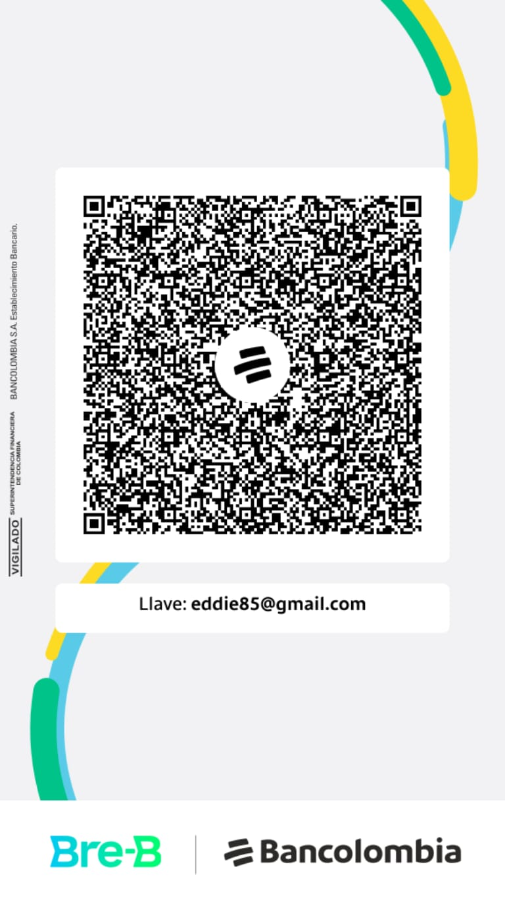

El último teclado que vas a usar
Desliza con los dos pulgares a la vez, con uno, toca o mezcla en la misma palabra, en español e inglés sin cambiar de idioma. Aprende tus palabras y las guarda en tu teléfono: Braid no tiene permiso de internet.
Descargar para AndroidDos pulgares, una palabra. Dibujado en esta página, más lento que al escribir de verdad.
Braid en números
de deslizamientos reales con dos pulgares, acertados a la primera, en el teléfono de nuestro probador.
para leer un deslizamiento (mediana). La palabra está ahí al levantar los pulgares.
idiomas en uno: español e inglés juntos, sin cambiar.
bytes enviados. Sin permiso de internet, tus palabras no salen de tu teléfono.
Prueba cómo se ve
Toca las teclas. Elige un tema y un efecto al tocar: cinco de los 15 temas de la app y cuatro de sus 16 efectos, dibujados aquí como los dibuja la app.
Braid vs Gboard
Los mismos 740 deslizamientos de prueba, con un pulgar, en los dos teclados. Braid acertó la palabra a la primera igual o más veces, con una fracción del tamaño y sin acceso a internet.
Dos pulgares son más rápidos que uno
En el estudio más grande sobre escritura en el teléfono, quienes escriben con dos pulgares hicieron en promedio 30% más palabras por minuto que quienes escriben con un dedo. Braid lee los dos pulgares a la vez: reparte una palabra entre ellos, desliza una mitad y toca la otra, o sigue con un pulgar si así escribes.
Un teclado como Keymonk y Nintype, para el Android de hoy
Keymonk y Nintype (Keyboard 69 en Android) hicieron conocido deslizar con los dos pulgares a la vez. Hoy ninguno está en Google Play. Braid Keyboard es un teclado nuevo para esa misma forma de escribir. Es una app propia, basada en FlorisBoard, sin relación con Keymonk, Nintype ni sus creadores.
| Teclado | Dos pulgares a la vez | Cómo está hoy |
|---|---|---|
| Braid Keyboard | Sí: deslizar, tocar o mezclar | Gratis desde esta página. Español e inglés a la vez, sin permiso de internet, 5.1 MB. No es de código abierto. |
| Kinetica | Sí | Gratis y de código abierto (GPL-3.0), en F-Droid. Sin permiso de red. |
| Keymonk | Sí | No está en Google Play. Última versión publicada: 2.29, de 2016. |
| Nintype (Keyboard 69) | Sí | No está en Google Play. Última versión publicada para Android: 2017. |
| FlorisBoard | No | Código abierto. Escribir deslizando viene apagado; se enciende en un ajuste para desarrolladores. Braid Keyboard se basa en él y añade su propia lectura de deslizamientos. |
| Gboard | Un pulgar | En Google Play. 84.5 MB. |
Revisado el 15 de noviembre de 2026 en Google Play, las páginas de los proyectos Kinetica y FlorisBoard, y las últimas versiones publicadas en Uptodown y APKPure. No hemos probado los otros teclados lado a lado.
Lo que hace
Desliza con los dos pulgares
Cada pulgar recorre su mitad de la palabra al mismo tiempo. Mezcla toques y deslizamientos en una palabra: Braid lo lee todo junto.
Aprende tus palabras
Nombres, jerga, tu marca: escribe una palabra nueva unas veces y ya la puedes deslizar. También aprende qué palabras usas juntas.
Español e inglés a la vez
Un solo teclado para los dos. Escribe "see you en la reunión" sin tocar un botón de idioma.
Borra deslizando
Desliza a la izquierda desde borrar y la selección sigue tu pulgar, letra por letra. Ve lejos y avanza por palabras enteras. Levanta para borrar; un deshacer lo devuelve.
Mueve y selecciona con la barra espaciadora
Desliza en el espacio para mover el cursor y desliza desde mayúsculas para seleccionar. Se acabó pelear con los marcadores.
Portapapeles y textos guardados
Lo que copiaste y los textos que guardas, en un solo lugar y con búsqueda. Mantén un recorte para elegir varios y guardarlos o borrarlos juntos. Un código recién copiado espera en la barra, a un toque.
Hazlo tuyo
15 temas, estelas al deslizar, 16 efectos al tocar como Glitch, Rayo y Píxel, movimiento de teclas y vibración que sigue tu trazo.
Tu velocidad, medida
Las estadísticas muestran qué tan rápido escribes en cada estilo y cuánto más rápido es deslizar para ti. Logros por ganar, un resumen corto de tu semana, una prueba de escritura y una tarjeta para compartir.
Privado de verdad
Braid no puede conectarse a internet: no tiene ese permiso. Sin cuenta, sin anuncios, sin copias en la nube de lo que escribes. Nada sale de tu teléfono a menos que tú mismo envíes un archivo de comentarios. Incógnito con un toque para lo delicado.
Cómo medimos
El 96% son 367 de 381 deslizamientos con dos pulgares que nuestro probador hizo en su propio teléfono en noviembre de 2026, contados como el teclado los leyó mientras escribía (con las palabras anteriores y las que había aprendido); 1 ms es la mediana para leer un deslizamiento en un teléfono. Braid vs Gboard: 740 deslizamientos con un pulgar generados por computadora (70 y 300 palabras comunes en inglés, limpios y descuidados, dos semillas al azar) en los dos teclados en un emulador de Android, sin aprendizaje. El motor de Braid se ajustó con deslizamientos así, así que léelo como parejo o un poco adelante, no una victoria clara; sigue la prueba con pulgares reales, y sus resultados van aquí, ganemos o perdamos.
Instálalo en un minuto
- Toca Descargar y abre braid.apk.
- Samsung: apaga primero Auto Blocker (Ajustes → Seguridad y privacidad → Auto Blocker). Luego lo puedes volver a encender.
- Si Android pregunta, permite Instalar apps desconocidas para tu navegador y toca Instalar. Si Play Protect avisa, toca Más detalles → Instalar de todos modos: Braid no está en Play Store.
- Abre Braid: su configuración activa el teclado.
¿Actualizando? Instala encima de tu Braid actual; conserva las palabras que aprendió.
Preguntas frecuentes
¿Braid Keyboard es privado?
Sí. No tiene permiso de internet, así que no puede enviar lo que escribes a ningún lado. Sin cuenta, sin anuncios y sin copias en la nube. Las palabras que aprende se quedan en tu teléfono.
¿Puedo escribir en español e inglés sin cambiar de idioma?
Sí. Los dos idiomas funcionan a la vez en un solo teclado, al deslizar y al tocar, sin botón de idioma.
¿Tengo que deslizar con dos pulgares?
No. Desliza con un pulgar, con los dos a la vez, toca o mezcla en la misma palabra.
¿Braid Keyboard es gratis?
Sí. Es gratis, sin anuncios y sin versión de pago.
¿Está en Play Store o en iPhone?
No. Braid Keyboard es solo para Android y se instala desde esta página: descarga braid.apk y sigue los pasos de instalación.
¿Cómo se compara con Gboard?
En 740 deslizamientos con un pulgar generados por computadora, Braid acertó a la primera el 98% de las veces contra 95% en trazos limpios, y 93% contra 91% en trazos descuidados: parejo o un poco adelante, no una victoria clara. Braid pesa 5.1 MB contra 84.5 MB y no tiene permiso de internet. Cómo medimos.
¿Braid Keyboard tiene relación con Keymonk o Nintype?
No. Es un teclado nuevo para la misma forma de escribir con dos pulgares, basado en FlorisBoard. No tiene relación con Keymonk, Nintype (Keyboard 69) ni sus creadores.
¿Braid Keyboard es de código abierto?
No. Se basa en FlorisBoard, que es de código abierto (Apache 2.0), pero el código propio de Braid Keyboard no está publicado.
Apoya a Braid
Braid es gratis, sin anuncios y sin versión de pago. Si te ayuda a escribir mejor y quieres dar las gracias, puedes enviar el monto que quieras.
Desde Colombia, en pesos (Bre-B)
Llave: eddie85@gmail.com
En la app de tu banco o billetera, elige Bre-B, escribe la llave o escanea el código. Sin costo.

Pronto: tarjetas y otras monedas. Contarle a alguien que escribe mucho ayuda igual.